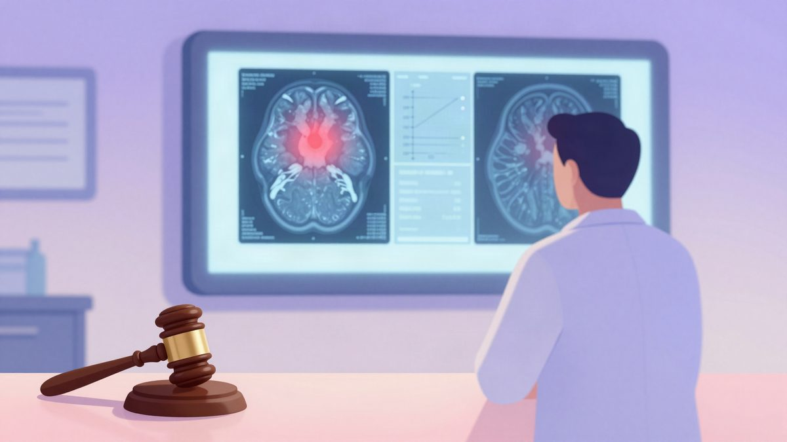

Studija iz SAD-a: porotnici strože osuđuju liječnika koji zanemari upozorenje AI-a

Istraživanje na 1334 ispitanika pokazuje da porotnici češće staju na stranu pacijenta ako je AI sustav označio krvarenje koje je radiolog previdio. Kad su saznali da sustav često daje lažne alarme, udio je pao sa 72,9 na 48,8 posto.
Liječnik koji previdi nalaz na snimci češće će biti proglašen krivim ako je AI sustav na njoj označio problem. To pokazuje istraživanje američkih znanstvenika objavljeno u časopisu NEJM AI, u kojem je sudjelovalo 1.334 stanovnika SAD-a. Ispitanici nisu postavljali dijagnozu, nego su u ulozi porotnika procjenjivali je li liječnik postupio s dužnom pažnjom.
U prvom scenariju 50-godišnjak je primljen sa znakovima moždanog udara. Prije davanja lijeka za otapanje ugruška trebalo je isključiti krvarenje u mozgu, jer bi lijek tada mogao pojačati krvarenje. Radiolog na CT-u nije vidio krv, pacijent je dobio lijek, stanje mu se pogoršalo, a oštećenje mozga ostalo je trajno.
Snimke, odluka liječnika i posljedice bili su isti u svim verzijama slučaja. Mijenjalo se samo je li radiolog imao AI asistenta i što je on pokazao.
Razlike među skupinama
Kad je radiolog radio bez AI-a, stranu pacijenta zauzelo je 56,3 posto ispitanika. Kad su i liječnik i algoritam propustili krvarenje, udio je bio 50 posto. Ako je sustav označio krvarenje, a liječnik se nije složio, ista pogreška vodila je do podrške pacijentu kod 72,9 posto ispitanika.
U drugom scenariju 55-godišnja žena, koja je ranije preboljela rak dojke, imala je redovit CT prsnog koša. Radiolog nije uočio tvorbu na stijenci prsnog koša, a godinu poslije biopsija je pokazala metastaze. Ako ni algoritam nije vidio odstupanje, pacijenticu je podržalo 63,5 posto ispitanika, a ako je liječnika upozorio, 78,7 posto.
Voditelj istraživanja Michael Bernstein sa Sveučilišta Brown taj učinak naziva "kaznom za AI". Kad je ishod poznat, upozorenje na snimci izgleda kao propuštena prilika, a u trenutku odluke liječnik ne zna je li signal opravdan. Autori su mjerili samo kako ljudi procjenjuju odluku unatrag, a ne koliko često liječnici stvarno gube tužbe.
Lažni alarmi mijenjaju sliku
Jednoj skupini rečeno je da sustav od deset slučajeva koje označi kao krvarenje stvarno pogodi samo pet. To je obilježje algoritma iz scenarija, a ne medicinskog AI-a općenito. Udio onih koji su podržali pacijenta tada je pao sa 72,9 na 48,8 posto. U slučaju tumora razlika je bila manja, sa 78,7 na 73,1 posto, i nije dosegla statističku značajnost.
U ožujku 2026. Bernsteinov tim objavio je u časopisu Nature Health drugi eksperiment sa 282 sudionika, u kojem se ocjenjivalo kako je liječnik radio sa snimkom. Ako je radiolog vidio upozorenje AI-a, samo jednom pregledao CT i propustio krvarenje, njegov je postupak nedovoljno pažljivim ocijenilo 75 posto sudionika. Ako je prvo sam pregledao snimku, zatim pogledao zaključak AI-a i vratio se na CT, tako ga je ocijenilo 53 posto. Zaključak liječnika bio je isti, ali dio ispitanika vrednovao je to što je sebi dao priliku da ga preispita. Za to nije bilo potrebno ponovno slati pacijenta na snimanje.
Moguće posljedice za pacijente
Bernstein upozorava na rizik za same pacijente. Ako liječnik smatra da će svako odbačeno upozorenje morati objašnjavati na sudu, lakše je naručiti još jednu pretragu, a to pacijentu znači dodatne troškove i čekanje odgovora. Istraživači nisu mjerili naručuju li liječnici zbog toga češće CT. Bernstein kaže da je to moguća posljedica takve prakse.
Američka liječnička udruga (AMA) u studenom je predložila da se u zakon upiše pravo liječnika da ne slijedi preporuku AI-a. Ako je liječnik koristio sustav prema namjeni, a pacijent je stradao zbog greške u proizvodu, udruga smatra da odgovornost treba snositi dobavljač. Od proizvođača traži i objavu ograničenja i pokazatelja točnosti sustava. Upravo je takav naizgled tehnički podatak u eksperimentu promijenio mišljenje porotnika.
Izvor: Habr vijesti
Povezani članci
- BusPatrol ima AI kamere na oko 35.000 školskih autobusa u SAD-u, a njihov učinak na sigurnost je sporan10. studenoga 2026.
- Microsoft: AI sustav dijagnosticira bolesti točnije od liječnika, ali samo na starim slučajevima22. listopada 2026.
 Istraživanje: 21 od 42 AI chatbota šalje naslove razgovora oglašivačkim trackerima17. studenoga 2026.
Istraživanje: 21 od 42 AI chatbota šalje naslove razgovora oglašivačkim trackerima17. studenoga 2026.